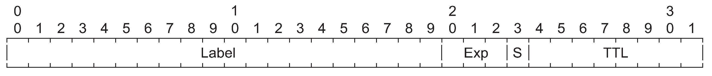
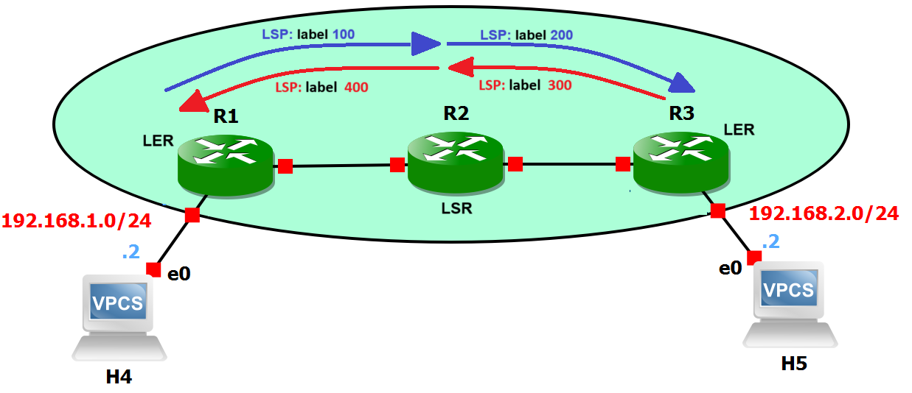
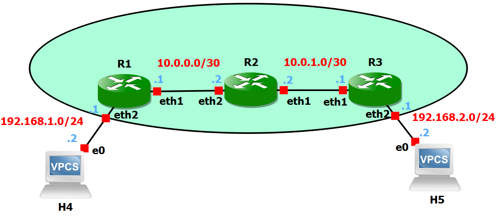
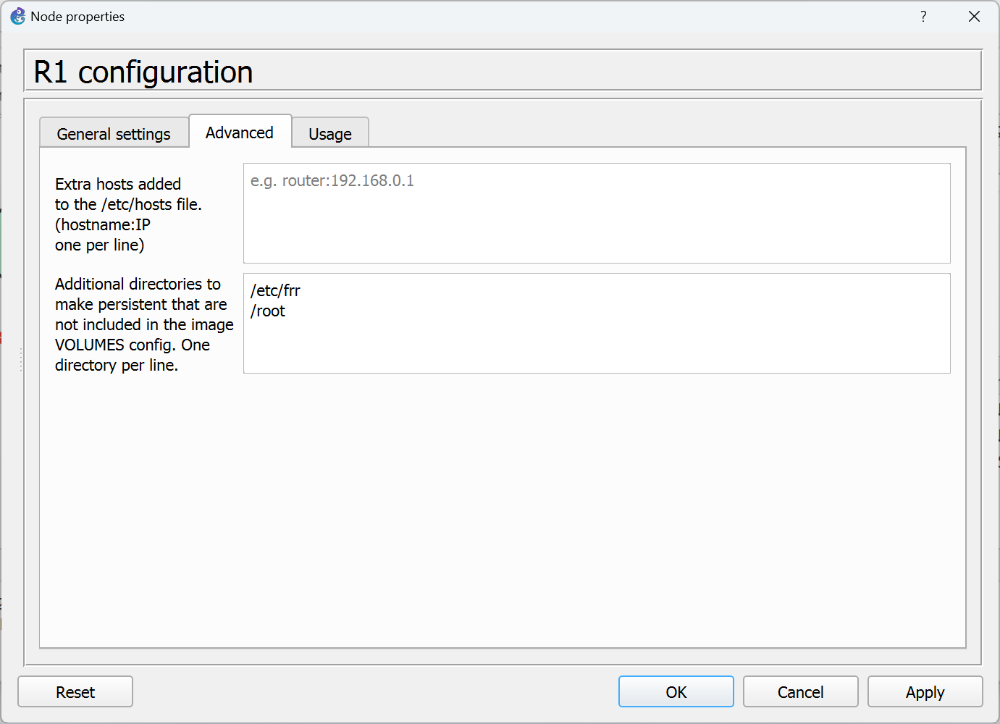
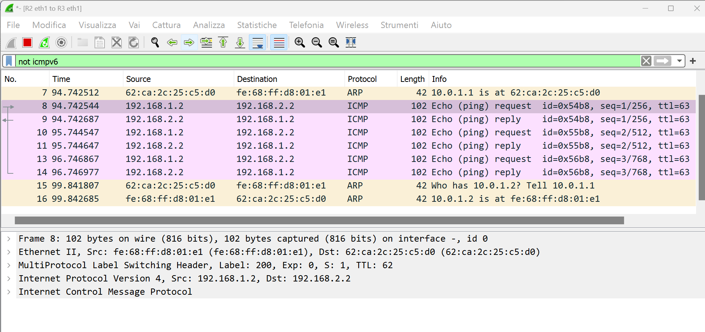
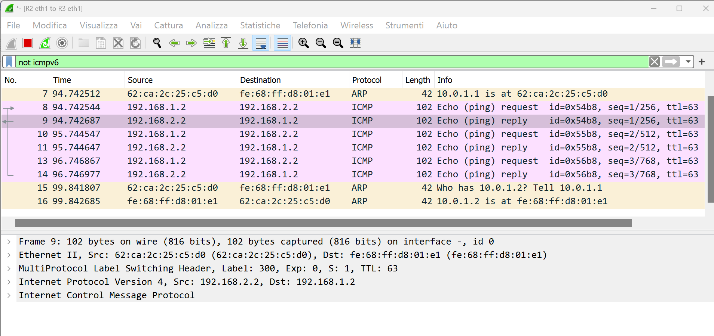
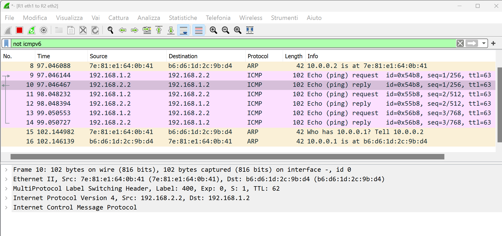

Lab #16
MPLS with static Label Switched Path (LSP)
The purpose of this lab is to show how MPLS (Multiprotocol Label Switching) works in a simple network scenario.
Introduction
Multiprotocol Label Switching (MPLS) is a routing technique that allows moving data from one node to the next based on external labels rather than destination IP addresses. Packets are routed along pre-established Label Switched Paths (LSPs).
Label Switch Routers (LSR), located in the inner part of an MPLS network, forward packets based on MPLS labels.
Label Edge Routers (LER), located at the edge of an MPLS network, encapsulate IP packets by adding the MPLS header (push operation) to traffic coming from adjacent routers external to the MPLS network and decapsulate IP packets by removing the MPLS header (pop operation) from traffic coming from adjacent MPLS routers.
In MPLS, packets can carry multiple labels in a stack. An LSR can swap the label at the top of the stack, pop the stack, or swap the label and push one or more labels into the stack. The processing of a packet is always based on the top label.
As described in RFC 3032, MPLS Label Stack Encoding, the label stack is represented as a sequence of label stack entries. Each label stack entry consists of 4 octets comprising a 20-bits label field. Hence, the maximum label value is 1048575. The S bit, if 1, marks the last entry of the label stack (Bottom of Stack).

In this lab we will create a static LSP in an MPLS network consisting of two LERs and a single LSR. Packets towards host H5 are labeled by LER R1 with label 100. The intermediate LSR R2 swaps label 100 into label 200 and forwards packets to the LER R3 which, in turn, pops the label and delivers the packets to the destination H5.
For packets generated by H5, the LER R3 encapsulates them with label 300. The intermediate LSR R2 swaps label 300 into label 400 and delivers the packets to the LER R1. Finally, R1 pops the MPLS label and delivers the packets to the destination H4.

Preparation steps
This lab requires the GNS3 VM to instantiate Docker containers of Linux-based routers. In particular, it requires that you have already executed once the preparation steps described for Lab #2.
Experiment steps
- Recreate the following topology in GNS3. Choose the "GNS3 VM" server to instantiate all the devices of this lab.

- When the devices are still inactive, right-click on the R1 router icon and select the Advanced tab.
- Modify the container configuration as illustrated in the following picture to make the /etc/frr and /root directories persistent across container restarts.

- Do the same for routers R2 and R3.
- Start all devices.
- Open H4 terminal and execute the following:
- assign IP address 192.168.1.2 with netmask /24 and default gateway address 192.168.1.1 to H4 with the command:
ip 192.168.1.2/24 192.168.1.1
- make this the automatic default configuration at startup for PC1 by issuing the command
save
at command prompt.
- Open H5 terminal and execute the following:
- assign IP address 192.168.2.2 with netmask /24 and default gateway address 192.168.2.1 to H5 with the command:
ip 192.168.2.2/24 192.168.2.1
- make this the automatic default configuration at startup for PC2 by issuing the command
save
at command prompt.
- Right-click on R1, R2, R3 to open their Auxiliary Console terminal.
- In R1 terminal create with the vi editor the /root/start.sh file with the following content, assign execution permission to it and execute it.
#!/bin/sh
sysctl -w net.mpls.conf.lo.input=1
sysctl -w net.mpls.conf.eth1.input=1
sysctl -w net.mpls.conf.eth2.input=1
sysctl -w net.mpls.platform_labels=1048575
ip route add 10.0.1.0/30 via 10.0.0.2
ip route add 192.168.2.0/24 encap mpls 100 via inet 10.0.0.2
ip -f mpls route add 400 dev lo
- In R2 terminal create with the vi editor the /root/start.sh file with the following content, assign execution permission to it and execute it.
#!/bin/sh
sysctl -w net.mpls.conf.lo.input=1
sysctl -w net.mpls.conf.eth1.input=1
sysctl -w net.mpls.conf.eth2.input=1
sysctl -w net.mpls.platform_labels=1048575
ip -f mpls route add 100 as 200 via inet 10.0.1.1
ip -f mpls route add 300 as 400 via inet 10.0.0.1
- In R3 terminal create with the vi editor the /root/start.sh file with the following content, assign execution permission to it and execute it.
#!/bin/sh
sysctl -w net.mpls.conf.lo.input=1
sysctl -w net.mpls.conf.eth1.input=1
sysctl -w net.mpls.conf.eth2.input=1
sysctl -w net.mpls.platform_labels=1048575
ip route add 10.0.0.0/30 via 10.0.1.2
ip route add 192.168.1.0/24 encap mpls 300 via inet 10.0.1.2
ip -f mpls route add 200 dev lo
- Start capture on link connecting R1 to R2.
- Start capture on link connecting R2 to R3.
- In H4 terminal execute the command to ping H5:
ping 192.168.2.2
and verify that answers are received.
Traffic analysis with Wireshark
The following picture shows the ICMP Echo Request packet issued by the ping from H4 to H5 captured on the link connecting R1 to R2.
This packet has been encapsulated by R1 with label 100.
The following picture shows the ICMP Echo Request packet issued by the ping from H4 to H5 captured on the link connecting R2 to R3.
The MPLS label has been swapped by R2 from 100 in 200.

The following picture shows the ICMP Echo Reply packet issued by H5 towards H4 captured on the link connecting R3 to R2.
This packet has been encapsulated by R3 with label 300.

The following picture shows the ICMP Echo Reply packet issued by H5 towards H4 captured on the link connecting R2 to R1.
The MPLS label has been swapped by R2 from 300 in 400.

Return to list of labs
Copyright (c) 2024 - Roberto Canonico
Last updated: October 3, 2024 by Roberto Canonico